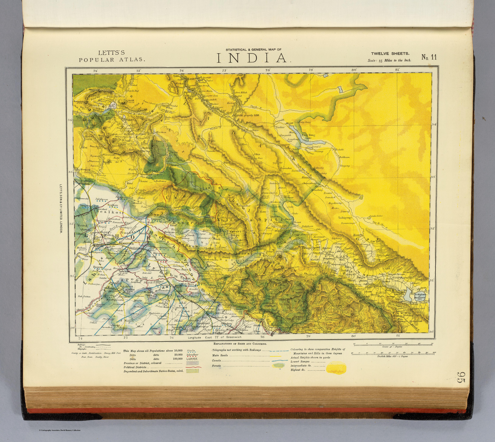

← Administered Empire and Victorian Atlas

Click to enlargeLetts's "Statistical & General Map of India" from Letts's Popular Atlas — a densely informative late-Victorian sheet showing not only towns and provinces but telegraph lines, railways, coffee plantations, forests and lighthouses. The empire mapped as a working economy.
Authorship and object
"India No. 11," the statistical and general map from Letts's Popular Atlas (Letts, Son & Co., London, 1883), in colour, relief by hachures and spot heights, at about 1:2,217,600.
Empire as infrastructure
Beyond political divisions and European possessions, the map layers on the apparatus of a developed colony — telegraph lines, roads, railways, lighthouses, even coffee plantations and forests. It reads the subcontinent as a system of communication and production.
The gaze
This is the administered empire seen as an economic machine. The map's interest is in what India contains and connects — its plantations, its telegraph wires, its rail network — the country understood as a functioning imperial economy to be inventoried and run.